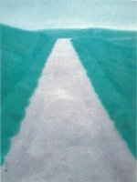
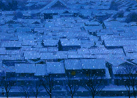

zichi Lorentz

Zichi Lorentz.
Visual Artist.Commentator-Publisher.
Liverpool UK (1952-1971).
London UK (1971-1994).
Japan (1994-).
Present location:Kobe City
My Paintings
My painting galleries are divided according to theme, like abstract. flowers, landscapes, seascapes.
Painting Notes
Just some basic notes about my paintings and the different themes.
Landscape Painting Notes
Some info on that
From 1994 until the end of 2002, I resided in the Japan Alps, which are in central Honshu. My studio was surrounded by alpine peaks. The Japan Alps are a place of outstanding natural beauty, four very clear seasons. Clean water and clean air. Mountains, rivers, waterfalls, volcano's.
A paradise for the landscape painter or photographer. Spring full of cherry blossom and other fruit blossoms. Summer is less interesting but there are still many treasures like flowers. The autumn is filled with colors of red, gold, orange, yellow. The winter is a time of deep snow and can be the longest season. It looks like the pictures you see on greeting cards.
I was very inspired by the Master Japanese painter, Higashiyama Kaii, (1908-1999) who first visited the area while he was a student at Tokyo University. On a very wet and rainy night, he was given shelter and food by a local farmer, that was the beginning of his story with Shinshu (the former name for Nagano Prefecture). After living and painting there for two years I discovered what it was that attracted him, it was the quality of the light. I was very fortunate, because in Nagano City is the Higashiyama Kaii Museum opened in 1990. Over the years, I made many visits and spent hours studying his paintings.
I received a letter of encouragement from Higashiyama Kaii in 1998. He died in 1999, and his grave is near my alpine studio.
In the end I was defeated by the deep snow because I have a hernia on my spine, and the daily moving was just too much. Often the winters last five months. I moved to a warmer climate, Kobe City. I arrived in Kobe City, Japan at the end of 2002. I then discovered that Higashiyama Kaii spent his childhood in Kobe City.